În stînga este slide-ul din curs, în dreapta aceeași figură, calculată în browser din aceleași date. Butonul ▶ modifică parametrul pas cu pas.
Serii de timp și procese stochastice · Staționaritate · Zgomotul alb și mersul aleator · Operatorul lag, diferențierea și descompunerea Wold · ACF și PACF de selecție · Teste portmanteau: Box–Pierce și Ljung–Box · Transformări · Două serii clasice
Serii de timp și procese stochastice
Patru serii ale acestui curs
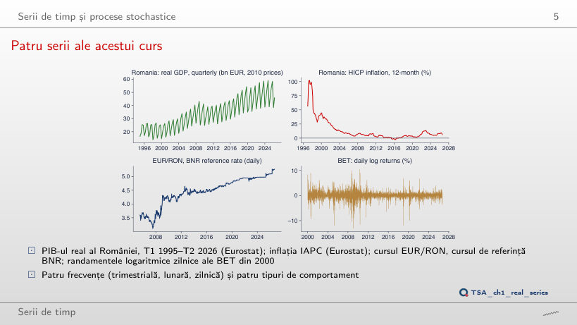
Răspuns
Randamentele BET: media este 0,18% în 2000–2004, −0,05% în 2008–2012, 0,03% în 2013–2017 și 0,07% în 2021–2025, toate apropiate de 0. Abaterea standard se schimbă însă: 1,48%, 2,04%, 0,78% și 0,88%. Media PIB-ului real crește de la 21,3 mld. EUR în 1995–1999 la 48,1 mld. EUR în 2021–2025, iar media inflației scade de la 59,3% în 1995–1999 la 0,82% în 2013–2017: pentru aceste serii, media depinde de perioadă.
Un ansamblu de traiectorii
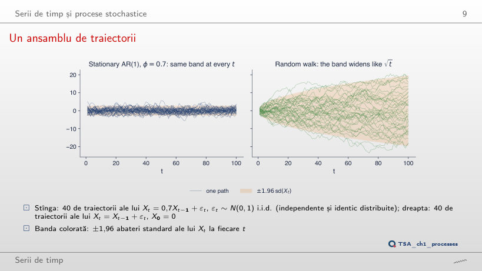
Răspuns
Banda se lărgește de la ±1,96 la ±13,89, pentru că Var(Xt) = 1/(1 − φ²) crește de la 1 la 50,25; varianța celor 40 de traiectorii la t = 100 urcă de la 0,95 la 44,26. Pentru orice |φ| < 1, banda are însă aceeași lățime la orice t: procesul rămîne staționar. La mersul aleator, banda crește cu t și ajunge la ±19,6 la t = 100.
Staționaritate
Slab, dar nu strict staționar
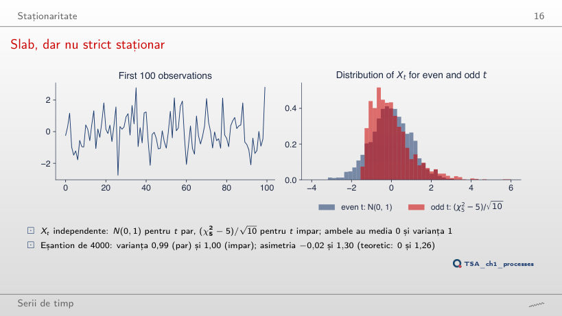
Răspuns
Doar forma. Pentru orice k, (χ²k − k)/√(2k) are media 0 și varianța 1, deci procesul rămîne slab staționar. Asimetria teoretică √(8/k) scade de la 2,83 la k = 1 la 1,26 la k = 5 și la 0,37 la k = 60 (în eșantion: 2,80; 1,30; 0,35). P(Xt < −1,6) la t impar este 0 pînă la k = 5 și 4,2% la k = 60, față de 5,9% la t par. Pentru orice k finit, distribuțiile de la t par și impar diferă, deci procesul nu este strict staționar.
Întrebare pentru sală: care serii sînt staționare?
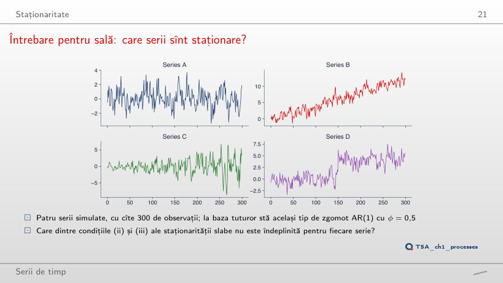
Răspuns
Doar seria A este staționară. B are trendul determinist μt = 0,04t: condiția (ii) nu este îndeplinită, iar media este 2,84 în prima jumătate și 9,05 în a doua. C are abaterea standard de 7,5 ori mai mare la final decît la început (1,09 și 2,74 pe cele două jumătăți): condiția (iii) nu este îndeplinită la h = 0. D are un salt de nivel de +4 la t = 150, care mută media de la −0,07 la 4,19: condiția (ii).
Zgomotul alb și mersul aleator
Trei tipuri de zgomot alb
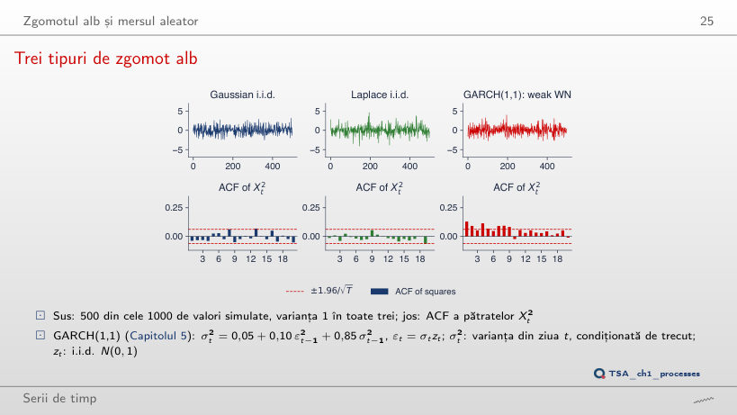
Răspuns
La α = 0, varianța condiționată este constantă și seria este un zgomot gaussian i.i.d.: Q*(10) = 9,3 pentru pătrate, p = 0,507. Statistica crește la 14,5 (p = 0,152) pentru α = 0,05, la 73,2 (p < 0,001) pentru α = 0,10 și la 838,9 pentru α = 0,14, iar kurtosis-ul urcă de la 3,20 la 5,85. Prin construcție, seria rămîne necorelată; testul pentru Xt dă totuși p = 0,028 la α = 0,14, pentru că banda testului presupune varianță constantă.
Mersuri aleatoare și varianța lor
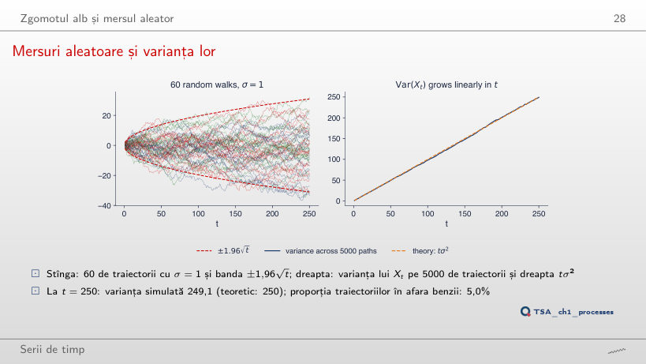
Răspuns
Nu. Pe cele 5000 de traiectorii, corelația este 0,708 între X10 și X20 și 0,954 între X100 și X110, ca valorile teoretice √(t/s) = 0,707 și 0,953. Pentru un proces staționar, corelația ar depinde doar de lag. Varianța crește și ea cu t: 10,1 la t = 10, 98,1 la t = 100 și 249,1 la t = 250 (teoretic tσ²).
Întrebare pentru sală: care serie este cea reală?
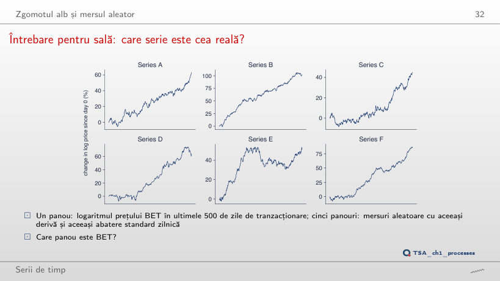
Răspuns
Seria D: BET, 11 septembrie 2024 – 18 septembrie 2026. Cu ochiul liber nu poate fi deosebită de mersurile aleatoare. Variațiile zilnice o deosebesc: ρ̂(1) = 0,123, iar p-value-ul testului Ljung–Box Q*(10) este 0,018, singurul sub 5% dintre cele șase serii; la mersurile aleatoare simulate, p-value-urile sînt între 0,377 și 0,911.
Operatorul lag, diferențierea și descompunerea Wold
S&P 500: nivelul și diferența lui
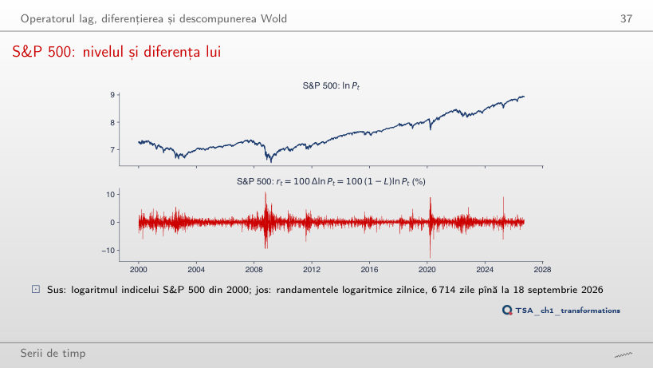
Răspuns
−0,543. Randamentele sînt deja apropiate de un zgomot alb (ρ̂(1) = −0,099), iar diferența unui zgomot alb este un MA(1) cu ρ(1) = −0,5: o diferențiere în plus creează autocorelație negativă și crește abaterea standard de la 1,21% la 1,80%. Nivelul ln Pt are ACF 0,999 la lagul 1 și 0,973 la lagul 50; la lagul 1, ACF rămîne peste 0,99 pentru orice început al eșantionului între 2000 și 2024.
Ponderile Wold ale a patru procese
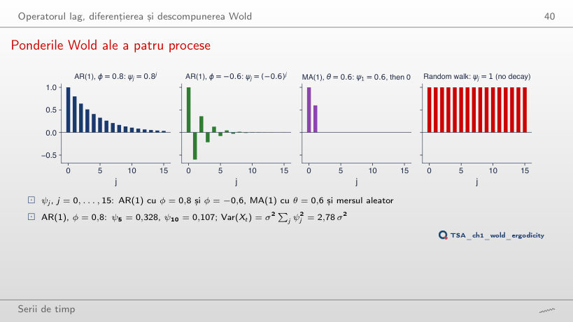
Răspuns
Crește: Σψj² = 1/(1 − φ²) este 1 la φ = 0, 2,78 la φ = 0,8 și 10,26 la φ = 0,95, cînd ψ10 = 0,599. La φ = 1, ψj = 1 pentru orice j, ca la mersul aleator, iar suma este infinită: procesul nu mai are formă Wold și nu mai este staționar.
Mediile în timp: proces ergodic și neergodic
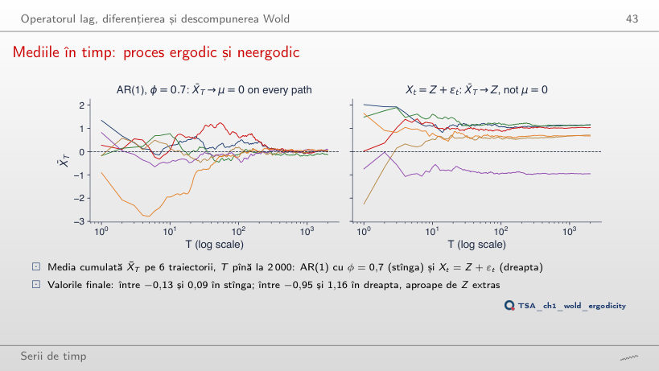
Răspuns
Da: pentru orice |φ| < 1, γ(h) → 0, deci X̄T → 0. Convergența este însă mai lentă: abaterea standard a lui X̄2000 este aproximativ 1/((1 − φ)√T), adică 0,022 la φ = 0, 0,075 la φ = 0,7 și 2,24 la φ = 0,99, iar valorile finale ale celor 6 traiectorii sînt între −0,04 și 0,03, între −0,13 și 0,09, respectiv între −3,66 și 3,00. În dreapta, cu sd(Z) = 0, Xt devine zgomot alb, iar mediile se apropie toate de 0.
ACF și PACF de selecție
Distribuția de selecție a ACF
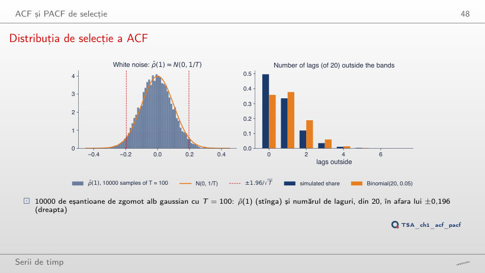
Răspuns
Din ce în ce mai des: în 4,5% dintre eșantioane la m = 1, 20,3% la m = 5 și 50,3% la m = 20, deși nu există nicio corelație. Cu teste independente ar fi 1 − 0,95m: 5,0%, 22,6% și 64,2%; la laguri mari Var(ρ̂(h)) < 1/T, deci ies ceva mai puține bare. La m = 20 ies în medie 0,73 bare.
ACF teoretică și de selecție pentru patru procese
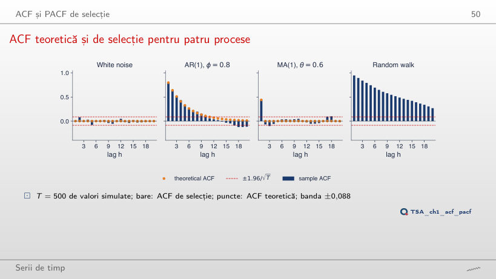
Răspuns
Crește: ρ̂(10) este −0,08 la T = 50, 0,37 la T = 100 și 0,55 la T = 500. Mersul aleator nu are o ACF teoretică, iar descreșterea ACF de selecție depinde de lungimea eșantionului. Pentru AR(1) cu φ = 0,8, ρ̂(10) se apropie de valoarea teoretică 0,11: −0,14 la T = 50, 0,11 la T = 100 și 0,09 la T = 500, iar banda se îngustează de la ±0,277 la ±0,088.
ACF și PACF pentru trei procese
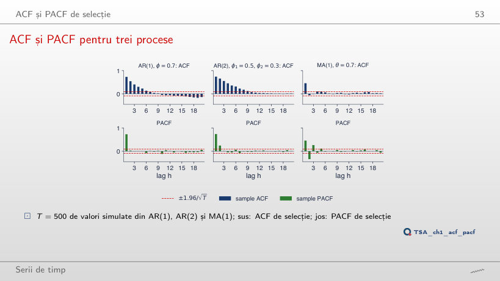
Răspuns
Coeficientul φ₂: φ̂22 = −0,40 pentru φ₂ = −0,4, −0,03 pentru φ₂ = 0 și 0,38 pentru φ₂ = 0,45 (teoretic, φ22 = φ₂). φ̂33 rămîne în bandă (0,05; 0,04; −0,01): PACF se anulează după lagul 2. ρ̂(2) nu urmărește φ₂: la φ₂ = 0 este 0,28, aproape de ρ(2) = φ₁² = 0,25.
BET: ACF a randamentelor, a valorilor absolute și a pătratelor
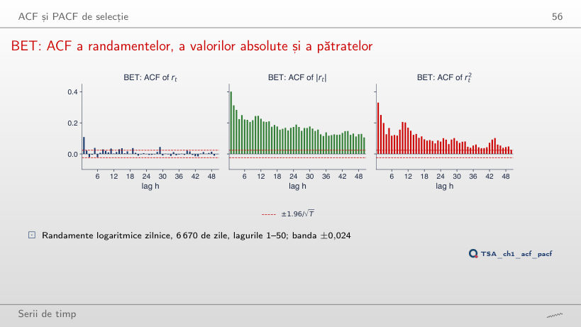
Răspuns
Pentru randamente, nu: ρ̂(1) = −0,099 pentru S&P 500 și 0,109 pentru BET (0,170 pentru EUR/RON). Pentru pătrate, da: ρ̂(1) = 0,31 pentru S&P 500 și 0,33 pentru BET, cu Q*(10) = 6133 și 2440. Semnul autocorelației randamentelor diferă de la o piață la alta, iar volatility clustering apare pe toate trei. Dacă eșantionul BET începe în 2013, ρ̂(1) scade la 0,054 pentru randamente și la 0,18 pentru pătrate.
Teste portmanteau: Box–Pierce și Ljung–Box
Box–Pierce și Ljung–Box în eșantioane mici
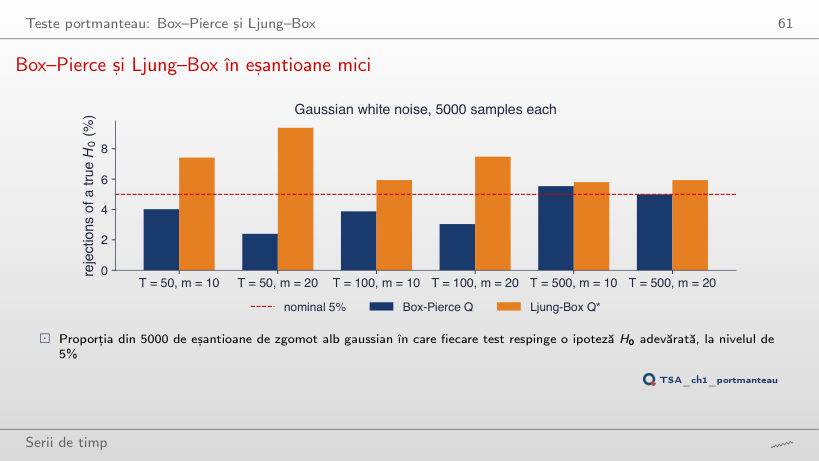
Răspuns
În direcții opuse. Box–Pierce respinge ipoteza adevărată în 4,5% dintre eșantioane la m = 1, în 4,0% la m = 10 și în 2,4% la m = 20; Ljung–Box în 5,2%, 7,4% și 9,4%. Cu T = 500 și m = 20, ratele sînt 5,0% și 5,9%. De aceea păstrăm m mult sub T (de exemplu, m ≤ T/5).
Statisticile Ljung–Box pentru serii reale
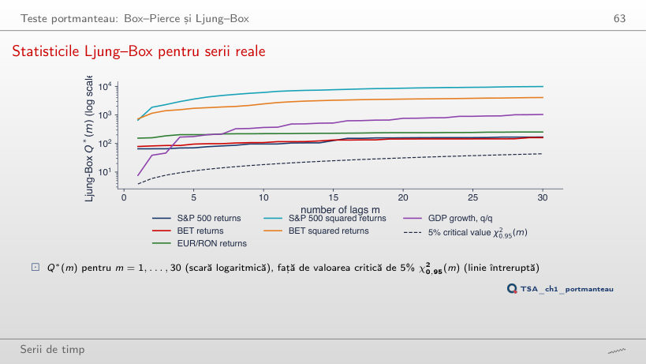
Răspuns
Nu: Q*(10) = 14,3, p = 0,161, sub valoarea critică 18,31. Pe tot eșantionul, cu 6670 de zile, Q*(10) = 108,0, p < 0,001. Autocorelația mică a randamentelor BET (ρ̂(1) = 0,11) are nevoie de multe observații ca să fie separată de zgomot; nerespingerea nu arată că seria este zgomot alb. Pătratele resping și pe eșantionul scurt: Q*(10) = 68,6 pentru BET și 103,0 pentru S&P 500.
Transformări
PIB-ul real al României: logaritm, creștere trimestrială și anuală
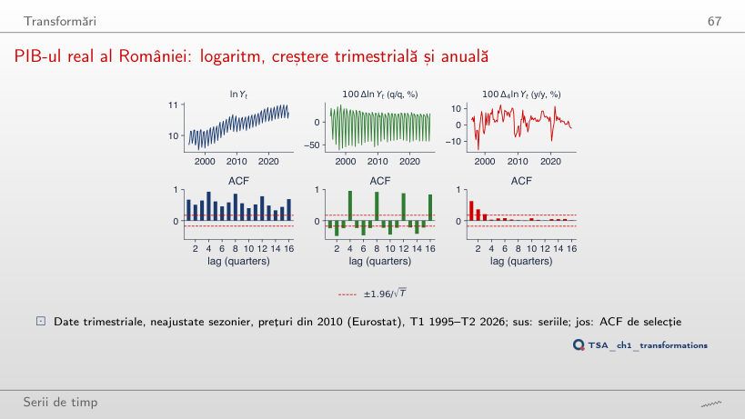
Răspuns
Pentru k = 4: ρ̂(4) = 0,03. Pentru k = 1, 2, 3 și 5, ρ̂(4) rămîne între 0,94 și 0,96: o diferență care nu acoperă un an întreg păstrează sezonul. k = 8 elimină și el sezonul, dar ρ̂(4) = 0,52, pentru că două creșteri pe doi ani aflate la un an distanță au un an în comun. Creșterea anuală, k = 4, are media 2,73% și ρ̂(1) = 0,63.
Box–Cox pentru PIB-ul nominal al României
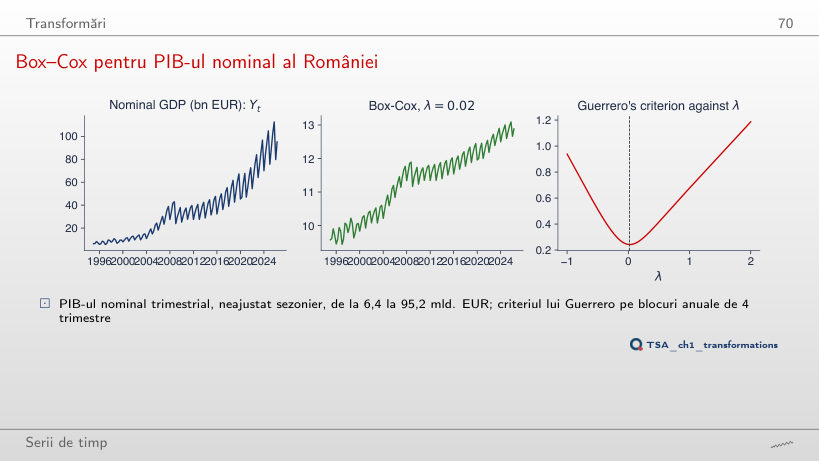
Răspuns
De 10,5 ori: 3059 de milioane EUR în primii cinci ani și 32155 în ultimii cinci, pentru că oscilația sezonieră este o proporție stabilă din nivel. Cu λ = 0, logaritmul, raportul este 1,07 (0,392 și 0,420), iar criteriul lui Guerrero, 0,243, este practic minimul atins la λ̂ = 0,02; la λ = 1 criteriul este 0,677.
Supradiferențierea
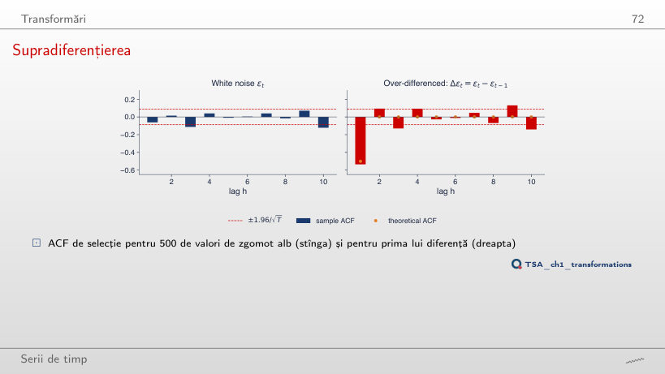
Răspuns
Urcă de la −0,54 spre 0: −0,28 la φ = 0,5, −0,10 la φ = 0,9 și −0,06 la φ = 1, conform valorii teoretice −(1 − φ)/2. Diferențierea este potrivită numai pentru mersul aleator, cînd ΔXt = εt; pentru o serie staționară, un ρ̂(1) negativ, apropiat de −0,5, semnalează supradiferențierea. Varianța primei diferențe scade de la 2,01 la 0,95.
Două serii clasice
Nilul și petele solare: seriile și ACF
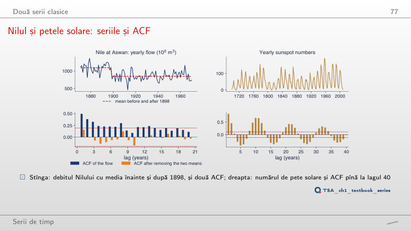
Răspuns
Este cel mai mic în jurul lui 1898: 0,13 pentru o ruptură după 1897 și 0,16 după 1898, cu Q*(10) = 13,0 (p = 0,225). Cu ruptura după 1880 sau după 1920, ρ̂(1) este 0,40 și 0,42, iar după 1950 este 0,50, cît are debitul însuși. O mare parte din autocorelația debitului vine din schimbarea mediei în jurul lui 1898.
Simulări: șocuri generate cu seed-urile codului capitolului; cînd parametrii diferă de cei din curs, seria se recalculează din aceleași șocuri sau se simulează în browser. PIB real și nominal: Eurostat, trimestrial, neajustat sezonier, în versiunea folosită în curs. IAPC: Eurostat, pînă în august 2026. EUR/RON: cursul de referință BNR. BET și S&P 500: datele de piață ale cursului (EODHD), pînă la 18 septembrie 2026. Nilul și petele solare: seturile de date din statsmodels.